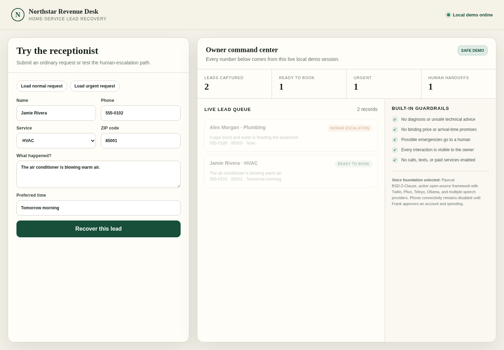

Current path is mapped
Using your public form, written description, and approved field list.
Mapping + tested local prototype. No production integration.
A fixed-price discovery sprint for independent HVAC, plumbing, and electrical companies. We map one current enquiry path, configure a local browser prototype, and run five synthetic cases through explicit rules. No customer records, credentials, external messages, or production accounts are used.
The workflow
Using your public form, written description, and approved field list.
Required fields and client-approved wording are represented in a browser prototype.
Five invented enquiries exercise normal, hazard-word, and incomplete-input behavior.
The local queue, test report, rules, and source files are handed over for a fit decision.
Important: this sprint does not connect to a live inbox, form, CRM, spreadsheet, dispatcher, phone, text, or email system. Production integration, if technically suitable, requires a separate scope after prototype acceptance.
Not an emergency or life-safety system: the prototype cannot receive or act on live requests and is not a diagnostic tool or substitute for calling emergency services, a utility, or the service company's direct dispatch channel.

Who this is for
This sprint is a low-access way to decide whether one public enquiry path deserves a later production integration.
Good fitWhat you receive
One-page diagram of the current public input, desired fields, explicit rules, local queue, and human decision point.
A source-code demonstration using a structured form, deterministic rules, and in-session owner queue. No external connectors are included.
Invented examples cover normal requests, hazard words, and missing required information. Expected and observed outputs are recorded.
A short factual note identifies what a later production build would require, including unresolved APIs, access, privacy, monitoring, and cost dependencies.
Prototype source files, configuration, test report, plain-English runbook, and seven calendar days for defects in the agreed prototype.
Plain terms
The written schedule is set only after the public path, field list, rules, synthetic cases, and reviewer availability are confirmed.
This is an unvalidated launch-price test: $375 after a signed scope and $375 after acceptance testing, before handoff. No third-party spend is included.
Includes one consolidated round on field mapping, deterministic rules, queue labels, and synthetic cases before handoff.
No production accounts, customer records, outbound messages, diagnosis, estimates, arrival promises, or dispatch actions are part of the sprint.
Defects against the agreed prototype tests are fixed for seven calendar days. Production sources, destinations, or new branches are outside this offer.
The sprint evaluates a proposed intake design. It does not guarantee production feasibility, labor savings, response time, leads, sales, or revenue.
FAQ
Your public intake URL, a written workflow description, approved fields and rules, and review of five invented cases. Do not send credentials, customer records, or private system access for this sprint.
No. The deliverable is a local browser prototype and implementation-options memo. Any live form, inbox, spreadsheet, database, CRM, phone, text, or email connection requires separate technical, privacy, access, and price review.
The local prototype validates required structured fields and records the observed test result. It does not use a confidence model or infer missing facts. Production failure handling is outside this sprint.
Possibly, but no integration is promised here. It may be scoped separately only after the prototype, platform documentation, permissions, data controls, monitoring, and operating costs are reviewed.
We confirm the public intake path, local prototype fields, explicit rules, five synthetic cases, acceptance test, schedule, and who gives approval. A signed scope comes before any invoice.
Completion means the five agreed synthetic cases produce the recorded expected outputs or an explicit validation error. After final payment, you receive the project-specific source, configuration, map, test report, implementation-options memo, and runbook. Pre-existing components and third-party code remain subject to their original licenses and the signed scope.
Next step: a written fit review. No invoice until scope, schedule, seller details, and acceptance terms are agreed.